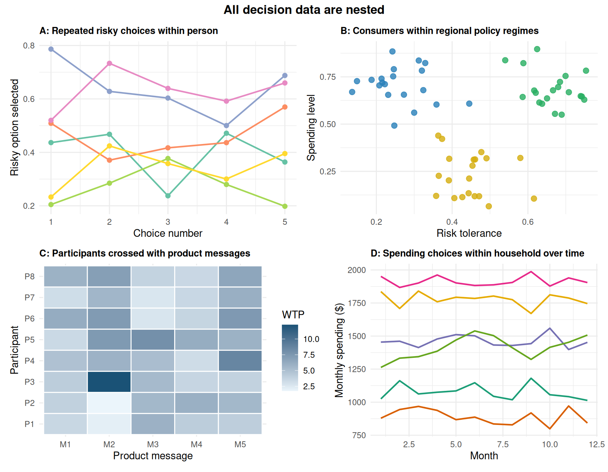

2 Module 0: All Data is Nested
2.1 The Central Claim
Before we learn any specific model, we need to confront a claim that sounds provocative but is actually quite mundane once you sit with it:
All data is nested.
Not “some data.” Not “longitudinal data” or “hierarchical organizational data.” All of it.
2.1.1 Two Examples That Look Different But Are Not
Example 1 — An incentivized risky-choice experiment. You recruit 200 participants. Each participant makes one incentivized choice between a safe option and a risky gamble. The gamble descriptions are sampled from a larger set of 60 possible risky problems — each with different probabilities and payoffs — so each participant sees a different gamble. At first glance this looks flat: 200 rows, one per person, one response each.
But consider the structure underneath. Each participant is a particular person sampled from a population of possible decision-makers, carrying their own stable risk preferences, their own financial situation, their own affective state on the day of the study. Each gamble is a particular stimulus sampled from a population of possible risky problems, with its own expected value, variance, and framing properties. The 200 observed choices are not 200 independent draws from a single distribution. They are 200 snapshots of a process with at least two levels: the gamble level and the person level.
Example 2 — A household spending panel. You observe 200 households making monthly spending decisions over 18 months — 3,600 rows total. Each month’s decision is nested within the household’s financial cycle: income shocks, recurring obligations, seasonal patterns, and the trajectory of decisions that came before. Each household has a characteristic spending level, a characteristic level of volatility, and a characteristic sensitivity to price changes.
The inferential structure is identical to Example 1. Each row belongs to a higher-level unit (a person, a household) that shapes it. Rows within the same unit are more alike than rows from different units. Standard regression, which assumes all rows are independent, is wrong in the same way in both cases.
2.1.2 Same Logic, Different Field
The nesting logic appears everywhere in JDM research, often under different names:
- Daily diary studies ask participants to record a risky or impulsive decision each day for two weeks. Each day’s entry is nested within the person — and the person’s mood, financial situation, and recent decision history shape each entry.
- Consumer panels track the same households purchasing across product categories over months or years. Each transaction is nested within the customer, whose stable price sensitivity and brand loyalty show up in every row.
- Repeated risky-choice experiments present each participant with dozens of gamble pairs. Each response is nested within both the participant (risk preferences) and the gamble (payoff structure and framing). Both sources of variance are real and both need to be in the model.
- Customers nested within product messages occur whenever a firm sends different information treatments to different customers, or whenever participants in an experiment each see multiple product descriptions. The message is a level of the data — not just a condition label.
The question is not whether nesting exists — it almost always does — but which higher-level process each row belongs to and which level matters for your claim.
2.1.3 Why Does This Matter?
Because ignoring nesting produces three kinds of errors: standard errors that are too small (inflated Type I error), estimands that conflate within-person and between-person effects, and causal language that is not supported by the design. The rest of the workshop is about diagnosing and fixing these errors.
NoteThe Three-Step Lens
Use this lens whenever you encounter a new dataset.
DGP: People make decisions in contexts, under constraints, shaped by stable preferences and shifting circumstances. The data-generating process is layered: stable person-level traits, varying situation-level features, and moment-to-moment noise all contribute to each observed response.
Observable pattern: Repeated or clustered rows are correlated. The same person’s choices look more alike than different people’s choices. The same gamble elicits more similar responses than different gambles. These patterns are not noise — they are information about the DGP.
Model implication: Flat regression treats all rows as independent, which assigns all of the between-cluster similarity to the residual. This is almost always wrong. It produces standard errors that are too small, coefficients that mix levels, and inference that is not trustworthy.
2.2 A Conceptual Map of Nesting in JDM Data
2.3 What This Module Covers
This module lays the conceptual groundwork for everything that follows.
Part 1: The DGP Perspective — What process generated this data, and what levels does that process have? We develop intuition for what a data-generating process is, why it is almost always nested, and what it means to “recapture the DGP.”
Part 2: Types of Nested Structures — Which of the four main nesting structures does my data fit, and what does each assume? Pure hierarchies, crossed structures, panel data, and longitudinal data each arise from a different relationship between observations, people, and contexts.
Part 3: Measuring Non-Independence — How much of my variance lives at the group level? Is the independence assumption badly violated? The Intraclass Correlation Coefficient (ICC) and design effects are the core diagnostic tools. We show how even modest ICCs produce dramatic distortions in inference.
Part 4: Data Structure and Format — How should my dataset be structured to make the nesting visible and the analysis correct? Long format, identifying variables, and reading a dataset to see its level structure immediately.
TipObservational and Experimental JDM: The Same Nesting Logic
| Observational JDM version | Experimental JDM version |
|---|---|
| Consumer spending panel: each purchase nested within customer history and market context | Risky choice experiment: each response nested within participant and gamble stimulus |
| Household finance longitudinal study: monthly decisions nested within household trajectories | WTP elicitation across framing conditions: each response nested within person and message |
| Policy rollout across regional markets: consumer outcomes nested within policy regime and region | Multi-site framing experiment: responses nested within participant, stimulus, and site |
The modeling tools differ in detail but share the same logical foundation: every row belongs to a higher-level process, and ignoring that process produces wrong inference.
2.4 A Note on Prerequisites
This workshop assumes you understand basic linear regression: what a slope and intercept mean, how to fit a model in R, what a residual is. You do not need to have any prior exposure to multilevel modeling, mixed-effects models, or hierarchical linear models. If you have heard these terms and found them confusing, that is fine — we start from scratch.
Throughout this workshop, every major concept is illustrated twice — once with observational JDM data (consumer panels, financial diaries, policy rollouts) and once with experimental JDM data (framing studies, risky-choice tasks, multi-site field experiments). The goal is that readers from both traditions recognize their own work in the examples.
Module 0 gives you the vocabulary to recognize structure. Module 1 gives you the model families that represent it — from random intercepts to crossed effects to growth curves. The two modules together answer the question: what kind of data do I have, and what model does it require?